정보통신산업기사 (2008-05-11 기출문제)
1과목: 디지털전자회로
1. 다음 중 RC 발진기의 설명으로 옳은 것은?
- 부성저항 특성을 이용한 발진기이다.
- R 및 C로써 정궤환에 의한 발진기이다.
- 압전효과에 의한 발진기이다.
- 부궤환에 의한 비정현파 발진기이다.
(정답률: 91%)

2. 그림과 같은 증폭회로의 전압이득(Vo/Vi)은 약 얼마인가? (단, gm = 10m℧, γd = 100kΩ)
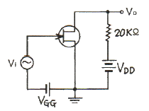
- -124
- -155
- -167
- -349
(정답률: 73%)
3. 다음 중 불 함수 (A+B)(A+C)와 같은 것은?
- A+BC
- B+C
- A+B+C
- A+B
(정답률: 87%)
4. 그림과 같은 회로에서 V1=V2=20[V]이면 VO[V]는? (단, 다이오드는 이상적이다.)
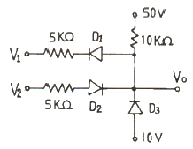
- 50
- 40
- 30
- 20
(정답률: 58%)
5. 다음 회로에서 출력 파형으로 가장 적합한 것은? (단, 펄스의 폭 τ 》 RC 이다.)
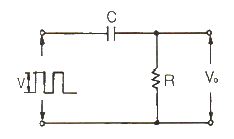
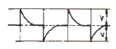
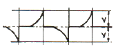
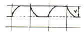
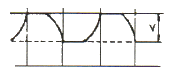
(정답률: 91%)
6. 진폭변조에서 반송파전력(Pc)과 피변조파전력(P)의 관계가 옳은 것은? (단, 변조도 m=1 이다.)
- Pc =
 P
P - Pc =
 P
P - Pc =
 P
P - Pc =
 P
P
(정답률: 65%)
7. 이미터접지 트랜지스터에서 VCE를 일정하게 하고 IB를 20[μA], 50[μA]로 했을 때 IC가 각각 5[mA], 9.5[mA] 였다면 전류증폭율 hfe는?
- 130
- 140
- 150
- 160
(정답률: 55%)
8. 다음 그림과 같은 연산회로의 명칭은?
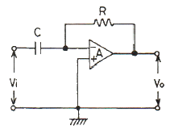
- 이상기
- 미분기
- 적분기
- 감산기
(정답률: 81%)
9. 수정진도자의 지지기(holder)가 갖추어야 할 조건으로 적합하지 않는 것은?
- 진동 에너지에 손실을 주지 않을 것
- 지지기 및 전극과 수정면 사이의 상대위치 변화가 원활할 것
- 외부로부터 기계적 진동이나 충격에 의해서 발진에 지장이 생기지 않을 것
- 온도 및 습도의 영향을 받지 않는 구조일 것
(정답률: 79%)
10. 그림과 같은 이상적인 연산 증폭회로의 증폭도(Vo/Vi)는? (단, R1=2kΩ, R2=15kΩ, R3=10kΩ 이다.)
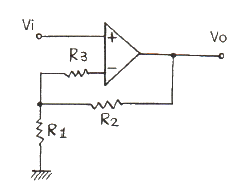
- 2.5
- 7.5
- 8.5
- 12.5
(정답률: 41%)
11. 다음 그림의 다이오드 회로와 등가인 논리 게이트는? (단, 정논리회로이다.)
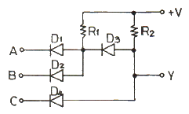
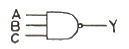
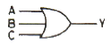
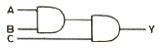
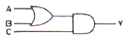
(정답률: 59%)
12. 저항 부하에서 A급 전력 증폭기의 최대 효율은?
- 20[%]
- 25[%]
- 40[%]
- 60[%]
(정답률: 50%)
13. EX-OR 게이트(2입력 1출력)를 사용하여 8비트 패리티 검사를 할 때 최소로 필요한 EX-OR 게이트의 수는?
- 9개
- 8개
- 7개
- 6개
(정답률: 48%)
14. 다음 중 외부로부터 트리거(trigger) 신호 없이 스스로 준안정 상태에서 다른 준안정 상태로 변화를 되풀이 하는 것은?
- 비안정 멀티바이브레이터
- 쌍안정 멀티바이브레이터
- 단안정 멀티바이브레이터
- 시미트 트리거
(정답률: 59%)
15. 반송파 vc=Vcsinωct를 vm=Vmsinpt로 진폭 변조했을 때 피변조파 v(t)는?
- v(t) = (Vc + Vm)sin pt
- v(t) = (Vc + Vm sin pt)sinωct
- v(t) = (Vc + Vm)sinωct
- v(t) = (Vcsinωct + Vm)sin pt
(정답률: 75%)
16. 다음 회로의 게이트는? (단, A, B는 입력이고 Y는 출력)
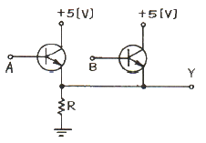
- AND
- OR
- NAND
- NOR
(정답률: 53%)
17. 권선비 (
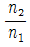
)가 3인 전원 변압기를 통하여 실효치 200[V]의 교류입력이 전파 정류되면 평균치는 몇 [V]인가?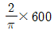
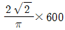
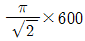
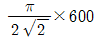
(정답률: 59%)
18. 그림의 회로에서 스위치 A가 1의 위치에 있을 때, 콘덴서 C 양단의 전압이 V로 충전되었고 이 때의 전류는 0 이다. 만일 t=0 에서 스위치 A를 위치 2로 전환한다면 t ＞ 0에서 전류 i(t)는?
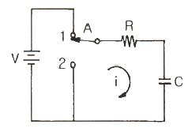
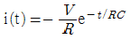
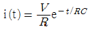
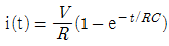
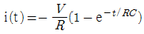
(정답률: 31%)
19. 다음 카르노도의 논리함수를 간략화할 때 옳은 것은?
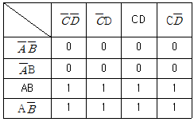
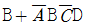
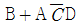
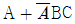
- A
(정답률: 79%)
20. 그림과 같은 이상적인 연산 증폭기에서 출력전압은? (단, 입력전압 : ei, 출력전압 : eo)
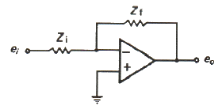
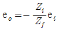
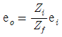
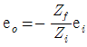
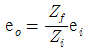
(정답률: 35%)
2과목: 정보통신기기
21. 차세대 가입자망 기술의 하나로 광섬유 케이블로 댁내까지 접속하는 것은?
- xDSL
- PON
- LAN
- HFC
(정답률: 52%)
22. 다음 중 CCTV의 응용범위가 아닌 것은?
- 의학용
- 난시청 해소용
- 교육용
- 방범용
(정답률: 90%)
23. 다음 중 무선가입자망 기술에 해당되지 않는 것은?
- WLL
- MMDS
- LMDS
- FTTH
(정답률: 87%)
24. 다음 중 NTSC 컬러 TV에서 음성신호의 변조방식은?
- AM
- VSB
- FM
- PM
(정답률: 60%)
25. 다음 중 대역 압축 방식으로 MH, MR 부호화 방식을 사용하여 전송하는 FAX는?
- G1 FAX
- G2 FAX
- G3 FAX
- G4 FAX
(정답률: 80%)
26. 다음 중 셀룰러 이동통신의 특징이 아닌 것은?
- 주파수 재사용
- 핸드오버
- 로밍
- 그룹 호출
(정답률: 47%)
27. 위성통신의 다원접속 방식이 아닌 것은?
- FDMA(Frequency Division Multiple Access)
- TDMA(Time Division Multiple Access)
- CDMA(Code Division Multiple Access)
- PAMA(Pre-Alignment Multiple Access)
(정답률: 88%)
28. MHS(Message Handling System)의 기본 구성이 아닌 것은?
- Message Transfer Agent (MTA)
- User Agent (UA)
- Message Analysis (MA)
- Message Store (MS)
(정답률: 69%)
29. 다음 중 무선통신에서 통신의 품질을 평가하는 척도는?
- 신호대 변조전력비
- 정보의 전송량
- 신호대 잡음비
- 전송 주파수
(정답률: 89%)
30. 다음 중 위성통신이 갖는 일반적인 특징이 아닌 것은?
- 장거리 광대역 통신
- 우수한 전송품질
- 대용량의 통신
- 전송지연이 없음
(정답률: 87%)
31. OSI 참조 모델의 물리계층에서 신호 재생의 역할을 주로 수행하는 것은?
- 라우터
- 리피터
- 브라우터
- 게이트웨이
(정답률: 75%)
32. 다음 중 통신위성 지구국에 설치하는 안테나로 가장 적합한 것은?
- 다이폴 안테나
- 야기 안테나
- 카세그레인 안테나
- 휩 안테나
(정답률: 83%)
33. CATV의 센터설비 중 헤드엔드의 주요 기능이 아닌 것은?
- 프로그램의 검색 및 편집
- 변조 및 복조
- TV 신호처리
- Pilot 신호발생
(정답률: 79%)
34. 다음 중 SOH(Synchronous Digital Hierarchy)에서 STM-1의 전송속도[Mbps]는?
- 155.52
- 139.26
- 62.08
- 50.84
(정답률: 74%)
35. 다음 중 모뎀(Modem)의 변복조 방식이 아닌 것은?
- QAM
- DPSK
- FSK
- SSB
(정답률: 83%)
36. 다음 중 국내 디지털 TV 방송의 영상압축 기술은?
- MPEG-1
- MPEG-2
- JPEG
- JBIG
(정답률: 81%)
37. 다음 중 수신기 성능의 평가 대상이 아닌 것은?
- 감도
- 충실도
- 대역폭
- 안정도
(정답률: 71%)
38. 다음 중 주파수 스펙트럼의 이용효율이 가장 좋은 변조 방식은?
- 16QAM
- FSK
- ASK
- 4PSK
(정답률: 89%)
39. 다음 중 좌표를 판독하여 아날로그 형태의 설계도면이나 도형을 디지털 형태로 컴퓨터에 입력하는데 사용되는 것은?
- 터치스크린
- 디지타이저
- OMR
- OCR
(정답률: 75%)
40. 다음 중 컴퓨터 시스템에서 처리 결과를 음성으로 출력하는 것은?
- 음성인식기
- 음성합성기
- 음성입력기
- 음성분석기
(정답률: 71%)
3과목: 정보전송개론
41. 데이터 전송 방식 중 병렬전송의 특징이 아닌 것은?
- 전송 속도가 빠름
- 근거리 전송에 주로 사용
- 송ㆍ수신간에 동기가 필요
- 전송로 비용이 비싸다.
(정답률: 79%)
42. 다음 중 표본화 잡음의 주된 발생원인으로 가장 적합한 것은?
- 표본화 주기의 변동
- 외부누화의 침입
- 저역 여파기의 차단특성
- 전송선로의 특성변동
(정답률: 52%)
43. 에러의 검출 능력을 나타내는 데는 해밍(Hamming)거리라는 것을 사용한다. U=(1011), V=(0010)일 때, 부호어 U와 V의 해밍 거리는?
- 1
- 2
- 3
- 4
(정답률: 75%)
44. 수신된 BPSK 신호는 반송파 성분이 없기 때문에 복조하기 위해 반송파 신호를 발생시킨다. 발생된 반송파의 위상은 두 개의 위상 중 어느 하나의 Locking 되며, Detector Mixer는 수신 BPSK 신호와 반송파를 곱해 데이터를 복조하게 된다. 이러한 역할을 하는 회로를 무엇이라 하는가?
- Polybinary
- Costas loop
- Phase lock loop
- Phase ambiguity
(정답률: 59%)
45. 다음 중 HDLC 동작 모드가 아닌 것은?
- 정규응답모드(NRM)
- 정규평형모드(NBM)
- 비동기평형모드(ABM)
- 비동기응답모드(ARM)
(정답률: 71%)
46. 전송로에서 사용되는 재생중계기의 3R 기능이 아닌 것은?
- 식별재생
- 신호전송
- 파형정형
- 타이밍재생
(정답률: 55%)
47. 다음 중 광케이블 전송로의 특징으로 적합하지 않은 것은?
- 무간섭성
- 저손실
- 전도성
- 대용량 전송
(정답률: 57%)
48. 이동통신의 채널에서 일어나는 현상과 가장 관련이 적은 것은?
- 음영효과
- 방해파 억압
- 도플러 효과
- 인접채널 간섭
(정답률: 65%)
49. 다음 중 물리계층에서 사용하는 데이터 전송단위는?
- bit
- frame
- packet
- message
(정답률: 80%)
50. 에러율이 5×10-5 [비트/초]인 전송회선에서 9600[bps] 속도로 15분간 전송할 때의 에러 비트수는?
- 72비트
- 288비트
- 432비트
- 720비트
(정답률: 47%)
51. UTP에서 선끼리의 상호간섭을 최소화하는 방법에 대한 설명으로 가장 적합한 것은?
- 박막을 입혀서 상호간섭을 최소화한다.
- 전송거리를 제한하여 상호간섭을 최소화한다.
- 네 선을 서로 꼬아서 선끼리의 상호간섭을 최소화한다.
- 두 선을 서로 꼬아서 선끼리의 상호간섭을 최소화한다.
(정답률: 59%)
52. HDLC 프로토콜의 FCS에 대한 설명으로 가장 적합한 것은?
- 2차국 또는 복합국의 주소를 나타낸다.
- 프레임의 동기를 맞추기 위해 사용된다.
- 1차국 또는 복합국이 주소부에서 지정하는 2차국 또는 복합국에 대한 동작을 command로 지령한다.
- 프레임 내용이 잘 전송되었는지 확인하기 위한 에러검출용으로 사용되며 통산 16비트 CRC 방식을 이용한다.
(정답률: 72%)
53. 데이터그램(datagram) 방식에 대한 설명 중 적합하지 않은 것은?
- 패킷마다 주소를 넣어 패킷을 구성한다.
- 모든 패킷은 설정된 하나의 경로에 따라 전송된다.
- 네트워크 운용에 있어서 보다 높은 유연성을 제공한다.
- 수신지의 마지막 노드에서는 송신지에서 송신한 순서와 다르게 패킷이 도착할 수 있다.
(정답률: 64%)
54. 정합필터(matched filter)에 대한 설명으로 적합하지 않은 것은?
- 디지털 통신에 사용되는 동기 검파기이다.
- 하나의 곱셈기와 하나의 적분기로 구현 할 수 있다.
- 정합필터의 출력은 입력신호 에너지(Es)의 반인 Es/2 이다.
- 펄스의 존재 유무를 판별하는 시점에 신호성분을 크게 하고 잡음성분을 작게 한다.
(정답률: 50%)
55. 광섬유가 단일모드인지 다중모드인지를 구별하는데 사용되는 광학 파라메터는?
- 모드수
- 개구수
- 전반사각
- 규격화주파수
(정답률: 54%)
56. OSI 참조모델에서 최상위 계층으로 7계층에 속하는 것은?
- 표현 계층
- 응용 계층
- 세션 계층
- 데이터링크 계층
(정답률: 81%)
57. 다음 중 동축 케이블의 특징이 아닌 것은?
- 전력전송이 가능하다.
- 사용 주파수가 높아지면 누화가 감소한다.
- 전기적이 유도잡음에 영향을 받지 않는다.
- 내부도체와 외부도체의 사이에는 절연 물질로 되어 있다.
(정답률: 80%)
58. 다음 중 정보신호에 따라 주파수를 변환시키는 디지털 변조방식은?
- ASK
- FSK
- PSK
- QAM
(정답률: 87%)
59. 전송부호가 가져야 하는 조건으로 맞지 않는 것은?
- 코딩효율이 양호해야 한다.
- 직류성분(DC성분)이 포함되지 않아야 한다.
- 전송대역폭을 넓게 차지해야 한다.
- 동기정보(timing 정보)가 충분히 포함되어야 한다.
(정답률: 70%)
60. 데이터 통신에서 full-duplex 방식의 가장 큰 장점은?
- 비동기식 전송에 적합하다.
- 송신, 수신을 동시에 할 수 있다.
- 데이터를 병렬로 전송할 수 있다.
- 데이터를 직렬로 전송할 수 있다.
(정답률: 77%)
4과목: 전자계산기일반 및 정보설비기준
61. 다음 중 프로그램 언어의 조건으로 맞지 않는 것은?
- 다양한 응용 문제를 해결 할 수 있어야 한다.
- 명령문이 통일성 있고 단순, 명료해야 한다.
- 가능한 외부적인 지원은 차단하고, 많은 내부적인 지원이 가능해야 한다.
- 언어의 확장성이 좋으며 구조가 간단하고 분명해야 한다.
(정답률: 81%)
62. 여러 개의 노드들 가운데 가장 큰 키 값을 가지는 노드나 가장 작은 값을 가지는 노드를 빠른 시간 내에 찾아내도록 만들어진 것은?
- Queue
- Stack
- Heap
- Linked list
(정답률: 50%)
63. 페이지 대체 알고리즘 중에서 최근에 다룬 어떤 페이지보다도 적게 사용된 페이지를 고르는 방법은?
- LRU 방법
- MFU 방법
- Second chance 방법
- Tuple-coupling 방법
(정답률: 58%)
64. 다음 중 에러의 발견과 교정까지 가능한 코드는?
- 2-out-of-5 코드
- 511111 코드
- excess-3 코드
- 해밍(Hamming) 코드
(정답률: 76%)
65. 중앙처리장치로부터 발생되는 기억장치의 읽기 신호와 쓰기 신호를 이용하여 입ㆍ출력장치에 대한 읽기와 쓰기를 수행할 수 있는 방식은?
- Interrupt I/O
- Channel I/O
- Programmed I/O
- Memory Mapped I/O
(정답률: 53%)
66. 다음 중 인터럽트와 관련이 없는 것은?
- DMA
- 데이지체인
- 폴링
- 스택
(정답률: 67%)
67. 컴퓨터에서 계산속도가 빠른 순서로부터 나열된 것은?
- ps - ns - μs - ms
- μs - ps - ns - ms
- ns - μs - ms - ps
- ms - ns - μs - ps
(정답률: 53%)
68. 다음 중 보조기억장치의 특징 아닌 것은?
- 대용량 정보를 장기보존하기가 편리하다.
- 기억용량을 주기억장치보다 크게 할 수 있다.
- 가격이 주기억장치보다 저렴하다.
- 주기억장치보다 정보를 읽는 속도가 빠르다.
(정답률: 67%)
69. 인터럽트 취급 루틴을 수행하기 전에 반드시 보존해야 하는 레지스터는 무엇인가?
- PC(Program Counter)
- AC(Accumulator)
- MBR(Memory Buffer Register)
- MAR(Memory Address Register)
(정답률: 70%)
70. 일부분의 비트 또는 문자를 지울 때 사용하는 연산은?
- MOVE
- AND
- OR
- COMPLEMENT
(정답률: 73%)
71. 다음 중 정보통신공사업의 등록기준이 아닌 것은?
- 사무실
- 기술능력
- 자본금
- 공사실적
(정답률: 50%)
72. 전기통신공사의 품질을 확보하기 위하여 정보통신공사업자에게 기술의 표준화, 기술훈련, 기술정보의 제공 또는 구제기구와의 협력 등에 관하여 기술지도를 하는 자는?(관련 규정 개정전 문제로 여기서는 기존 정답인 3번을 누르면 정답 처리됩니다. 자세한 내용은 해설을 참고하세요.)
- 체신청장
- 전파연구소장
- 지식경제부장관
- 방송통신위원장
(정답률: 63%)
73. 정보통신공사 발주자는 누구에게 공사의 감리를 발주하여야 하는가?
- 설계자
- 감리기술자
- 용역업자
- 정보통신고사업자
(정답률: 65%)
74. 감리원이 업무를 성실하게 수행하지 아니하여 부실하게 될 우려가 있을 때에 발주자가 감리원에게 취할 수 있는 조치는?
- 시정지시 등 필요한 조치
- 500만원 이하의 과태료 부과
- 재시공 기타 필요한 조치
- 공사중지명령 기타 필요한 조치
(정답률: 55%)
75. 다음 ( ) 안에 들어갈 내용으로 가장 적합한 것은?
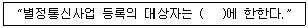
- 개인
- 법인
- 내국인
- 기간통신사업자
(정답률: 49%)
76. 보편적 업무의 구체적 내용을 정할 때 고려하는 사항이 아닌 것은?
- 공공의 이익과 안전
- 전기통신역무의 보급 정도
- 정보통신기술의 발전 정도
- 정보화 추진 정도
(정답률: 30%)
77. 다음 중 정보통신공사의 종류에 해당하지 않는 것은?
- 통신선로 설비공사
- 구내통신 설비공사
- 방송국 설비공사
- 철도통신 설비공사
(정답률: 52%)
78. 다음 ( )안에 들어갈 내용으로 가장 적합한 것은?(관련 규정 개정전 문제로 여기서는 기존 정답인 3번을 누르면 정답 처리됩니다. 자세한 내용은 해설을 참고하세요.)
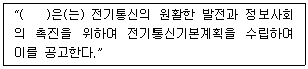
- 국무총리
- 지식경제부장관
- 방송통신위원회
- 한국정보사회진흥원장
(정답률: 61%)
79. 정보통신기술자를 공사현장에 배치하지 아니한 자에 대한 벌칙은?
- 100만원 이하의 과태료
- 200만원 이하의 과태료
- 300만원 이하의 벌금
- 500만원 이하의 벌금
(정답률: 61%)
80. 다음 ( ) 안에 들어갈 내용으로 가장 적합한 것은?
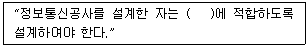
- KS 관련규정
- 설계도서 및 관련규정
- 대통령령으로 정하는 기술기준
- 전기통시설비의 기술기준
(정답률: 50%)